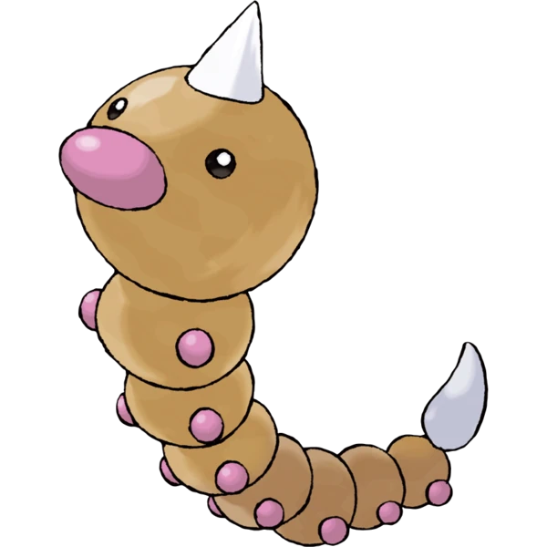
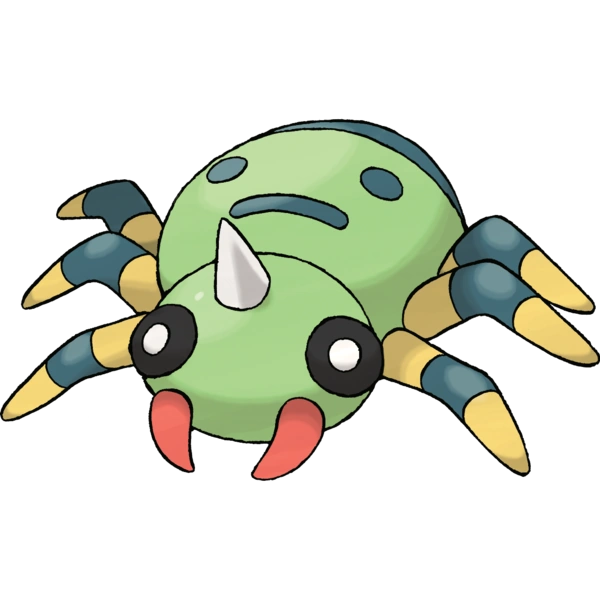
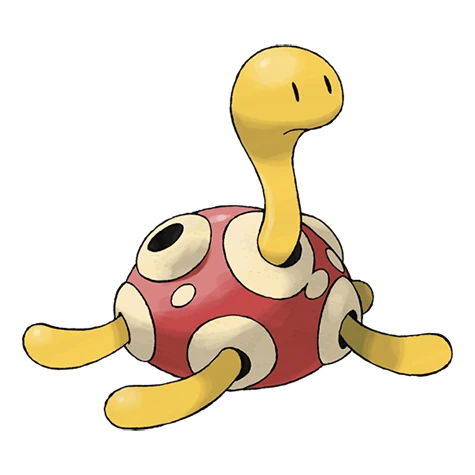
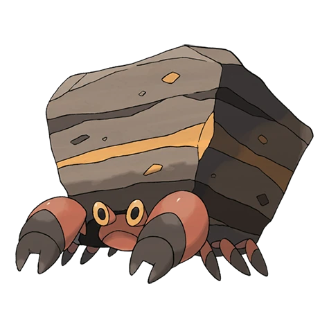
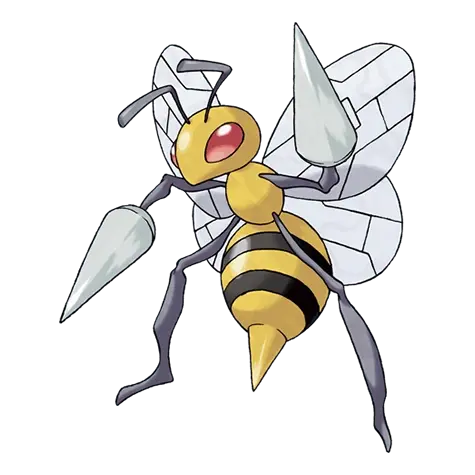
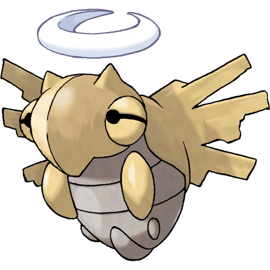

I'm a cool guy who likes catching bugs! I started out in Viridian Forest catching everything in sight. My #1 goal is to become the Pokémon League champion using only the coolest, strongest critters known to poké-kind, bug-types!!
My work

Weedle
Often found in forests, eating leaves. It has a sharp stinger on its head that injects poison.

Spinarak
It lies still in the same pose for days in its web, waiting for its unsuspecting prey to wander close.

Shuckle
It stores berries inside its shell. To avoid attacks, it hides beneath rocks and remains completely still.

Crustle
This highly territorial Pokémon prefers dry climates. It won't come out of its boulder on rainy days.

Beedrill
It can take down any opponent with its powerful poison stingers. It sometimes attacks in swarms.

Shedinja
Shedinja's hard body doesn't move - not even a twitch. In fact, its body appears to be merely a hollow shell.